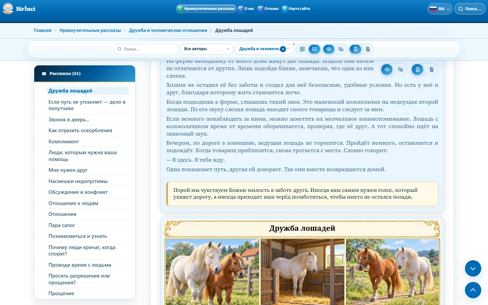

Текст рассказа и иллюстрации
Рассказ состоит из заголовка, основного текста, морали и иллюстрации. Мораль выделена светло-кремовой панелью. При первом открытии страниц рассказов иллюстрации уже видны: предварительно нажимать кнопку показа изображения не нужно.
Скройте иллюстрацию кнопкой скрытия изображения и верните её кнопкой показа. У текста есть отдельные кнопки показа и скрытия. Одновременно скрыть текст и изображение нельзя: хотя бы одно должно оставаться видимым. На телефоне кнопки текста могут отсутствовать, а сам текст остаётся доступным для чтения.
Обращайте внимание на имя автора и конкретный источник, если они указаны. Одинаковое общее примечание об источниках больше не повторяется под каждым рассказом. Общая информация о редактировании и иллюстрациях, созданных ИИ, может находиться во вступлении; она не заменяет авторство отдельного рассказа.
Чтобы поделиться рассказом, после перехода к нему скопируйте адрес из браузера. Сохраните знак # и идентификатор рассказа в конце, например #friendship-of-horses.

